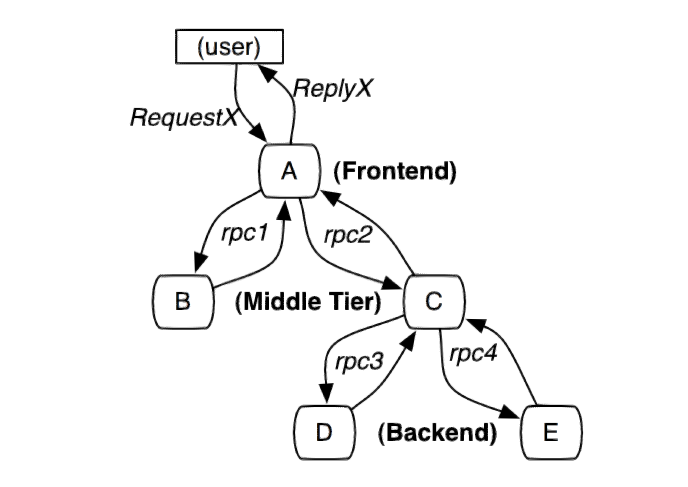
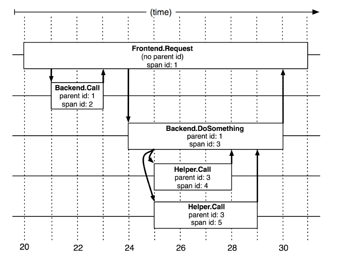
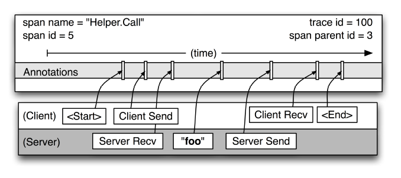
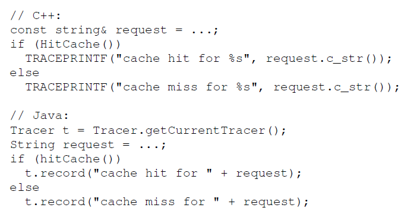

概述
当代的互联网的服务，通常都是用复杂的、大规模分布式集群来实现的。互联网应用构建在不同的软件模块集上，这些软件模块，有可能是由不同的团队开发、可能使用不同的编程语言来实现、有可能布在了几千台服务器，横跨多个不同的数据中心。因此，就需要一些可以帮助理解系统行为、用于分析性能问题的工具。
Dapper--Google生产环境下的分布式跟踪系统，应运而生。那么我们就来介绍一个大规模集群的跟踪系统，它是如何满足一个低损耗、应用透明的、大范围部署这三个需求的。当然Dapper设计之初，参考了一些其他分布式系统的理念，包括Magpie和X-Trace，但是我们之所以能成功应用在生产环境上，还需要一些画龙点睛之笔，采样率以及缩减通用库的代码量是我们设计dapper的关键。
自从Dapper发展成为一流的监控系统之后，给其他应用的开发者和运维团队帮了大忙，所以我们今天才发表这篇沦为，来汇报一下这两年来，Dapper是怎么构建和部署的。Dapper最初只是作为一个自给自足的监控工具起步的，但最终进化成一个监控平台，这个监控平台促生出多种多样的监控工具，有些甚至已经不是由Dapper团队开发的了。下面我们会介绍一些使用Dapper搭建的分析工具，分享一下这些工具在google内部使用的统计数据，展现一些使用场景，最后会讨论一下我们迄今为止从Dapper收获了些什么。1. 介绍
我们开发Dapper是为了收集更多的复杂分布式系统的行为信息，然后呈现给Google的开发者们。这样的分布式系统有一个特殊的好处，因为那些大规模的低端服务器，作为互联网服务的载体，是一个特殊的经济划算的平台。在这个上下文中理解分布式系统的行为，就需要对互联网进行观察，观察那些横跨了不同的应用、不同的服务器之间的彼此关联的行为。
下面举一个跟搜索相关的例子，这个例子阐述了Dapper可以应对哪些挑战。比如一个前段服务可能对上百台查询服务器发起了一个Web查询，每一个查询都有自己的Index。这个查询可能会被发送到多个的子系统，这些子系统分别用来处理广告、进行拼写检查或是查找一些像图片、视频或新闻这样的特殊结果。根据每个子系统的查询结果进行筛选，得到最终结果，最后汇总到页面上。我们把这中搜索模型称为“全局搜索”（universal search）。总的来说，这一次全局搜索有可能调用上千个服务器，设计各种服务。而且，用户对搜索的耗时是很敏感的，而查询耗时可能由任何一个子系统的低效导致。如果一个工程师只能知道这个查询耗时不正常，但是他无从知晓这个问题到底是由哪个服务调用造成的，或者为什么这个调用性能差强人意。首先，这个工程师可能无法准确的定位到这次全局搜索是调用了哪个服务，因为新的服务、乃至服务上的某个组成部分，都有可能在任何时间上过线或修改过，有可能是面向用户功能，也有可能是一些例如针对性能或安全认证方面的功能。其次，你不能苛求这个工程师对所有参与这次全局搜索的所有服务都了如指掌，每一个服务都有可能是不同的团队开发或维护的。再次，这些暴露出来的服务或服务器有可能同时还被其他客户端使用着，所以一个这个全局搜索的性能问题有可能是其他应用造成的。举个例子，一个后台服务可能要应付各种各样的请求类型，而一个使用效率很高的存储系统，比如Bigtable，有可能正被反复读写着，因为上面跑着各种各样的应用。
上面这个案例中我们可以看到，对Dapper我们只有两点要求：无所不在的部署，持续的监控。无所不在的重要性不言而喻，因为在使用跟踪系统的过程中，即便只遗漏了一小部分，那么人们对这个系统是不是值得信任都会产生巨大的质疑。另外，监控应该是7x24小时的，因为通常是哪些异常状况出现过，就很难甚至不太可能重现。那么，根据这两个明确的需求，我们可以直接推出三个具体的设计目标：
1.低消耗：跟踪系统对在线服务的影响应该做到很小，小到可以忽略不计。在一些高度优化过的服务，即使一点点损耗也会很容易察觉到，而且有可能迫使在线服务的部署团队不得不将跟踪系统关停。
2.应用级的透明：对于应用的程序员来说，是不需要知道有跟踪系统这回事的。如果一个跟踪系统想生效，需要依赖应用的开发者主动配合，那么这个跟踪系统也太脆弱了，往往由于跟踪系统在应用中植入代码的bug或疏忽导致应用出问题，这样才是无法满足对跟踪系统“无所不在的部署”这个需求。面对当下想Google这样的快节奏的开发环境来说，尤其重要。
3.延展性：Google至少在未来几年的服务和集群的规模，监控系统都应该能完全把控住。
一个额外的设计目标是为跟踪数据产生之后，进行分析的速度要快，理想情况是数据存入跟踪仓库后一分钟内就能统计出来。尽管跟踪系统对一小时前的旧数据进行统计也是相当有价值的，但如果提供新鲜的信息就可以更快对生产环境下的异常状况做出反应。
做到真正的应用级别的透明，这应该是当下面临的最挑战性的设计目标，我们把核心跟踪代码限制在很小的一部分，包括无所不在的线程、控制流和RPC库代码。使用自适应的采样率可以使跟踪系统的变得可调节，而且还可以降低性能损耗，这些内容将在第4.4节中提及。结果展示的相关系统也需要包含一些用来收集跟踪数据的代码，用来图形化的工具，以及用来分析大规模跟踪数据的库和API。虽然单独使用Dapper有时就足够让开发人员查明异常的来源，但是Dapper的初衷不是要取代所有其他的工具。我们已经发现，Dapper的数据往往侧重性能方面的调查，以致于其他工具可以针对局部起作用。
1.1 文献的总结
分布式系统跟踪工具的设计空间已经被一些优秀文章探索过了，其中的Pinpoint [9]、Magpie[3]和X-Trace[12]和Dapper最为相近。这些系统在其发展过程的早起倾向于写入研究报告中，即便他们还没来得及清楚地评估系统当中一些重要设计的重要性。相比之下，由于Dapper已经在大规模生产环境中摸爬滚打了多年，经过这么多生产环境的验证之后，这才是最合适的时机发表这篇论文，重点阐述亦喜爱Dapper的部署告诉了我们什么，我们的设计设计是如何实践的，以及以什么样的方式实现它才会最有用。Dappe作为一个平台，承载基于Dapper开发的性能分析工具，以及Dapper自身的监测工具，它的价值在于我们可以在回顾评估中找出一些意想不到的结果。
虽然Dapper在许多高阶的设计思想上与Pinpoint和Magpie有异曲同工之妙，但我们的实现，在这个领域中包含了许多新的贡献。例如，我们想实现低损耗的话，特别是在高度优化的而且趋于极端延迟敏感的Web服务中，采样率是很必要的。或许更令人惊讶的是，我们发现即便是1/1000的采样率，对于跟踪数据的通用使用层面上，也可以提供足够多的信息。
我们的系统的另一个重要的特征，就是我们能实现的应用级的透明。我们的组件对应用的侵入被先限制在足够低的水平上，即使想Google网页搜索这么大规模的分布式系统，也可以直接进行跟踪而无需加入额外的Anotation。虽然由于我们的部署系统有幸是一定程度的同质化的，所以更容易做到对应用层的透明这点，但是我们证明了这是实现这种程度的透明性的充分条件。
2. Dapper的分布式跟踪
图1：这个路径由用户的X请求发起，穿过一个简单的服务系统。用字母标识的节点代表分布式系统中的不同处理过程。
分布式服务的跟踪系统需要记录在一次特定的请求后系统中完成的所有的工作的信息。举个例子，图1展现的是一个和5台服务器相关的一个服务，包括：前端（A），两个中间层（B和C），以及两个后端（D和E）。当一个用户（这个用例的发起人）发起一个请求时，首先到达前端，然后发送两个RPC到服务器B和C。B会发上做出反应，但是C需要和后端的D和E交互之后再返还给A，A再响应最初的请求。对于这样一个请求，简单实用的分布式跟踪就是为服务器上的每一次你发送和接收收集信息标识符和时间戳。
为了将所有记录条目与一个给定的发起者（例如，图1中的RequestX）关联上并记录所有信息，现在有两种解决方案，黑盒和基于注解的监控方案。黑盒方案[1，15，2]假定需要跟踪的除了上述信息之外没有额外的信息，这样使用统计回归技术来推断两者之间的关系。基于注解的方案[3，12，9，16]依赖于应用程序或中间件明确地标记一个全局ID，从而连接每一条记录和发起者的请求。虽然黑盒计划比注解的方法更轻便，他们需要更多的数据，以获得足够的精度，因为他们依赖于统计推论。基于标注的方案最主要的缺点是，很明显，需要组件的程序开发。在我们的环境中，因为所有的应用程序使用相同的线程模型，控制流和RPC系统中，我们发现，可以限制嵌入手段至一个很小的通用库中，并实现了监测系统的应用对开发人员是有效地透明。
我们倾向于认为，Dapper的跟踪架构是内嵌RPC的树形结构。然而，我们的核心数据模型不只限制在我们的特定的RPC框架，我们还跟踪其他行为如在Gmail的SMTP会话，外界的HTTP请求，和外部对SQL服务器的查询等。从形式上看，我们的Dapper跟踪模型使用的树形结构，span以及Anotation。
2.1 跟踪树和span
在Dapper跟踪树结构中，树节点是整个架构的基本单元，而每一个节点又是对span的引用。节点之间的连线表示的span和它的父span直接的关系。虽然span在日志文件中只是简单的代表span的开始和结束时间，他们在整个树形结构中却是相对独立的，任何RPC相关的时间数据、零个或多个特定应用程序的Anotation的相关内容会在2.3节中讨论。
图2：5个span在Dapper跟踪树种短暂的关联关系
在图2中说明了span在一个大的跟踪过程中是什么样的。Dapper记录了span名称，以及每个span的ID和父ID，以重建在一次追踪过程中不同span之间的关系。如果一个span没有父ID被称为root span。所有span都挂在一个特定的跟踪上，也共用一个跟踪id（在图中未示出）。所有这些ID用全局唯一的64位整数标示。在一个典型的Dapper的跟踪中，我们希望为每一个RPC对应到一个单一的span上，而且每一个额外的组件层都对应一个跟踪树型结构的层级。
图3：在图2中所示的一个单独的span的细节图
图3给出了一个更详细的典型的Dapper跟踪span的记录点的视图。在图2中这种某个span表述了两个“Helper.Call”的RPC(分别为server端和client端)。span的开始时间和结束时间，以及任何RPC的时间信息都通过Dapper在RPC组件库记录下来。如果应用程序开发者选择在跟踪中增加他们自己的注释（如图中“foo”的注释），这些信息也会和其他span信息一样记录下来。
记住，任何一个span可以包含来自不同的主机信息，这些也要记录下来。事实上，每一个RPC span可以包含客户端和服务器两个过程的注释，使得链接两个主机的span会成为最常见的形式。由于客户端和服务器上的时间戳来自不同的主机，我们必须考虑到时间偏差。在我们的分析工具，我们利用了这个事实：RPC客户端发送一个请求之后，服务器端才能接收到，对于响应也是一样的（服务器先响应，然后客户端才能接收到这个响应）。这样一来，服务器端的RPC就有一个时间戳的一个上限和下限。
2.5.2 实现点
Dapper可以以对应用开发者近乎零浸入的成本对分布式控制路径进行跟踪，完全依赖于基于少量通用库的手段。如下：
- 当一个线程在处理跟踪控制路径的过程中，Dapper把这次跟踪的上下文的在ThreadLocal中进行存储。追踪上下文是一个小而且容易复制的容器承载了Scan的属性比如跟踪ID和其他段ID。
- 当计算过程是延迟调用的或是异步的，大多数Google开发者通过线程池或其他执行器，使用一个通用控制流库来回调。Dapper确保所有这样的回调可以存储这次跟踪的上下文，而当回调函数被触发时，这次跟踪的上下文会与适当的线程关联上。在这种方式下，Dapper可以使用trace ID和span ID来辅助构建异步调用的路径。
- 几乎所有的Google的进程间通信是建立在一个用C++和Java开发的RPC框架上。我们使用该框架定义RPC中所有的span。span的ID和跟踪的ID会从客户端发送到服务器。像那样的基于RPC的系统被广泛使用在谷歌中，这是一个重要的实现点。当他们的发展成熟找到了自己的用户群之后，我们计划构建非RPC通信框架。
Dapper的跟踪数据是独立于语言的，很多在生产环境中的跟踪结合了用C++和Java写的进程的数据。在3.2节中，我们讨论应用程序的透明度时我们会把这些理论的是如何实践的进行讨论。
2.5.3 Anotation
上述实现点足够推导出复杂的分布式系统的跟踪细节，使得Dapper的核心功能在不改动Google应用的情况下可用。然而，Dapper还允许应用程序开发人员在Dapper跟踪的过程中添加额外的信息，以监控更高级别的系统行为，或帮助调试问题。我们允许用户通过一个简单的API定义时间戳的Anotation，核心的示例代码入图4所示。这些Anotation可以添加任意内容。为了保护Dapper的用户意外的过分热衷于日志的记录，独立的跟踪段有一个可配置的总Anotation量的上限。应用程序级的Anotation是不能够用应用程序的行为来取代结构span或RPC的信息。
除了简单的文本Anotation，Dapper也支持的key-value映射的 Anotation，提供给开发人员更强的跟踪能力，如持续的计数器，二进制消息记录和在一个进程上跑着的任意的用户数据。键值对的Anotation方式用来在分布式追踪的上下文中定义某个特定应用程序的相关类型。
2.5.4 采样率
低损耗的是Dapper的一个关键的设计目标，因为如果这个工具价值未被证实但又对性能有影响的话，你可以理解服务运营人员为什么不愿意部署它。况且，我们想让开发人员使用Anotation的API，而不用担心额外的开销。我们还发现，某些类型的Web服务是对组件的性能损耗确实非常敏感。因此，除了把Daper的收集工作对基本组件的性能损耗限制的尽可能小之外，我们还有进一步控制损耗的办法，那就是遇到大量请求时只记录其中的一小部分。我们将在4.4节中讨论跟踪的采样率方案的更多细节。

图5：Dapper收集管道的总览
2.5.5 跟踪的收集
Dapper的跟踪记录和收集管道的过程分为三个阶段（参见图5）。首先，span数据写入（1）本地日志文件中。然后Dapper的守护进程和收集组件把这些数据从生产环境的主机中拉出来（2），最终写到（3）独特的区域型Dapper Bigtable仓库中。一次跟踪被设计成Bigtable中的一行，每一列相当于一个span。Bigtable的支持稀疏表格布局正适合这种情况，因为每一次跟踪可以有任意的span。跟踪数据收集的平均延迟--也就是说，从应用中的二进制数据传输到中央仓库（Bigtable）所花费的时间--不多于15秒。(下面涉及到一些百分位数percentile的概念，跟统计学有关，大家可以自行忽略)第98位的百分位数的延迟是随着时间的推移双峰分布的；约75％的时间，98位的百分位数的收集延迟是少于两分钟的，但其余约25％的时间可以长达数小时。
Dapper还提供了一个API来简化访问我们仓库中的跟踪数据。 Google的开发人员用这个API，以构建通用和特定应用程序的分析工具。第5.1节包含更多如何使用它的信息。